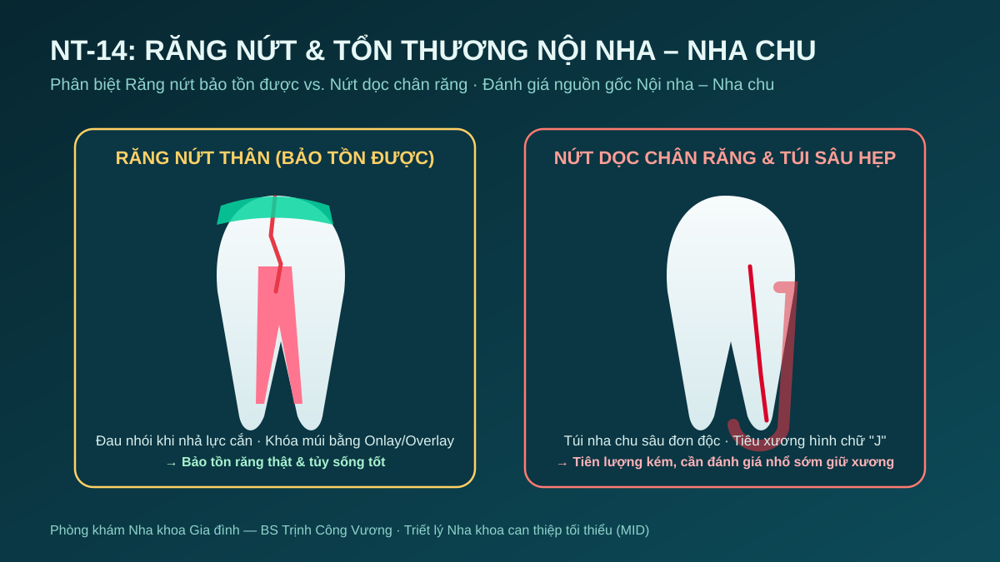

NT-14: Răng nứt và tổn thương nội nha – nha chu: Chẩn đoán phân biệt và khả năng bảo tồn

Trong thực hành lâm sàng ở lứa tuổi trung niên (40–60 tuổi), có hai tình huống khiến cả bệnh nhân lẫn nha sĩ đau đầu nhất vì triệu chứng dễ đánh lừa và tiên lượng thay đổi rất nhanh: đó là răng nứt ngầm / nứt dọc chân răng và tổn thương phối hợp Nội nha – Nha chu (Endo-Perio Lesions). Chẩn đoán phân biệt đúng ngay từ đầu giúp ta biết chiếc răng nào còn cơ hội bảo tồn lâu dài, và chiếc răng nào buộc phải nhổ sớm để bảo vệ xương hàm.
1. Răng nứt (Cracked Tooth) vs. Nứt dọc chân răng (Vertical Root Fracture – VRF)
Không phải mọi đường nứt đều giống nhau. Hiệp hội Nội nha Hoa Kỳ (AAE) phân biệt rõ các mức độ:
- Đường rạn men (Craze Lines): Chỉ là vết rạn nông trên lớp men ngoài, rất phổ biến ở người trưởng thành, không đau và không cần điều trị.
- Răng nứt (Cracked Tooth): Đường nứt chạy từ mặt nhai hướng về phía cổ răng hoặc xuống phần trên chân răng, thường gặp ở răng hàm lớn hàm dưới do thói quen nhai đồ cứng (đá, xương, hạt cứng) hoặc nghiến răng.
- Triệu chứng điển hình: Đau nhói sắc như điện giật khi nhai trúng thức ăn dai/cứng, đặc biệt đau rõ lúc vừa nhả hàm ra (rebound pain) trên nghiệm pháp cắn từng múi (Tooth Slooth). Có thể kèm nhạy cảm lạnh nhẹ.
- Khả năng bảo tồn: Bảo tồn được tốt nếu phát hiện sớm khi đường nứt chưa lan sâu xuống sàn tủy/chân răng. Giải pháp chuẩn MID là cố định ôm giữ các múi răng bằng phục hồi bán phần dán dính (Onlay/Overlay) hoặc mão chụp; nếu tủy đã viêm không hồi phục thì điều trị nội nha trước rồi bọc bảo vệ múi.
- Nứt dọc chân răng (Vertical Root Fracture – VRF): Đường nứt chạy dọc theo chiều dài chân răng, thường gặp ở răng đã lấy tủy có đặt chốt kim loại lớn hoặc thành ngà bị làm mỏng quá mức.
- Dấu hiệu nhận biết: Túi nha chu rất sâu, hẹp và đơn độc ngay tại vị trí đường nứt (các mặt răng khác hoàn toàn bình thường), lỗ rò nằm cao gần viền lợi, hình ảnh X-quang có thể thấy thấu quang hình chữ "J" hoặc quầng sáng ôm dọc một bên chân răng.
- Khả năng bảo tồn: Tiên lượng xấu (vô vọng) với răng một chân (buộc phải nhổ sớm để tránh tiêu hủy bản xương ngoài cho kế hoạch phục hình sau này); răng nhiều chân đôi khi có thể cắt bỏ riêng chân răng bị nứt nếu các chân còn lại vững chắc.
2. Tổn thương Nội nha – Nha chu (Endo-Perio Lesions): Phân biệt "ai là thủ phạm đầu tiên"?
Mô tủy bên trong răng và mô nha chu bên ngoài thông thương với nhau qua lỗ chóp, ống tủy phụ và ống ngà. Khi một chiếc răng vừa có tổn thương quanh chóp trên X-quang vừa có túi nha chu sâu, bác sĩ cần xác định nguồn gốc nguyên phát để điều trị đúng thứ tự:
- Tổn thương Nội nha nguyên phát (Primary Endodontic): Tủy răng bị hoại tử (thử lạnh/điện âm tính), vi khuẩn thoát qua chóp hoặc ống tủy bên dọc dây chằng nha chu lên rãnh lợi tạo một đường rò hẹp giả túi nha chu. Xử trí: Chỉ cần điều trị nội nha chuẩn mực — túi giả đó sẽ tự đóng kín và lành xương hoàn toàn mà không cần nạo túi nha chu!
- Tổn thương Nha chu nguyên phát (Primary Periodontal): Bệnh nha chu lan rộng nhiều răng (cao răng sâu, túi nha chu rộng nhiều mặt răng), nhưng tủy răng vẫn còn sống (thử lạnh/điện dương tính). Xử trí: Chỉ điều trị nha chu, tuyệt đối không lấy tủy oan.
- Tổn thương phối hợp thực sự (True Combined Lesion): Cả tủy hoại tử và túi nha chu sâu thực sự đã gặp nhau. Xử trí: Điều trị nội nha trước, theo dõi đáp ứng rồi mới điều trị nha chu; tiên lượng phụ thuộc vào lượng xương nâng đỡ còn lại.
Địa chỉ: Số 15 đường Võ Nguyên Giáp, phường Đức Xuân, tỉnh Thái Nguyên
Hotline & Zalo tư vấn trực tiếp: 0912 343 858 · Website: https://tcvuong6-wq.github.io/bsvuong-web/